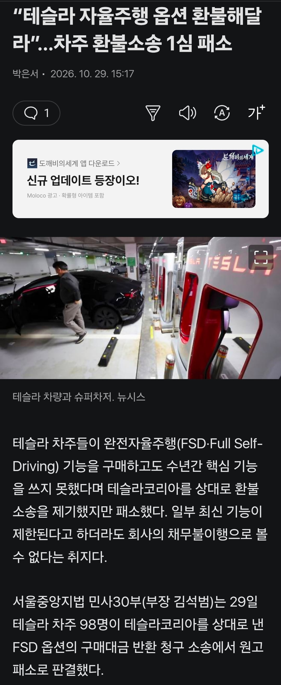
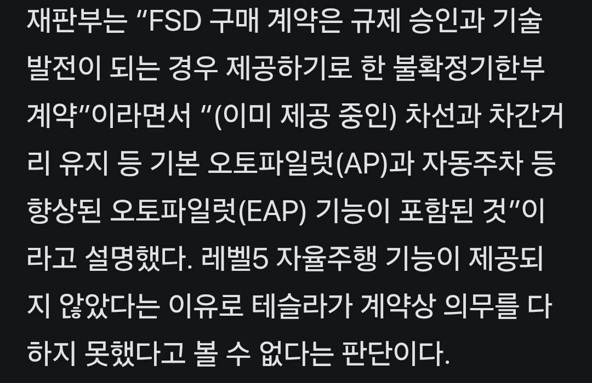
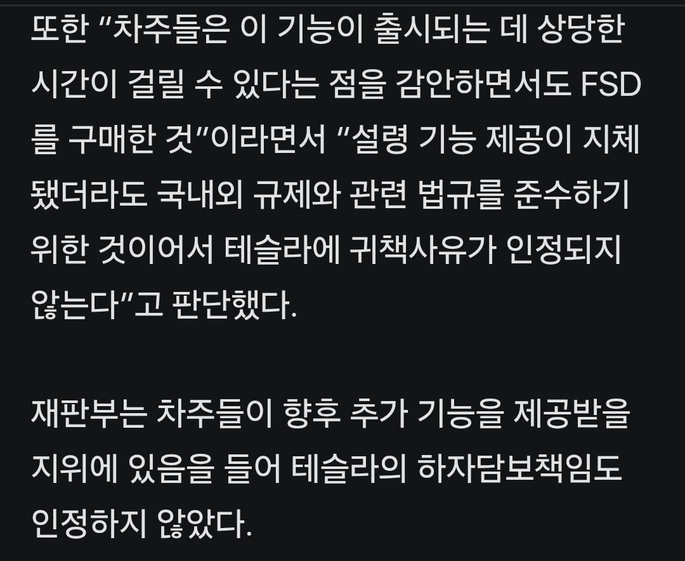

구현도 안되는 가능 팔았다고 환불해 달라고 소송했는데
재판부: "응 그럴 줄 알고 샀잖아 호구 쉑히들 ㅎㅎ"



구현도 안되는 가능 팔았다고 환불해 달라고 소송했는데
재판부: "응 그럴 줄 알고 샀잖아 호구 쉑히들 ㅎㅎ"
규제기관 탓도 못할게 우리나라는 국제표준따라가는데 최신 국제표준도 fsd는 허용안함. 최신 국제표준 적용이라도 받으려면 약간 다운그레이드 해야함.
예외승인이란 방법도 있지만
예외승인이라는게 일종의 특혜라 국익에 도움이 되거나
최소한 국익을 해치진 말아야 하는데 fsd승인해 주면 현기가 내수에서 줘 터지니.
그게 아니라 자국 자동차 생산이 활발한 국가들만 금지고 그렇지 않은 국가들은 다 허용이여
예컨데 프랑스, 독일, 일본 이런데는 FSD 불법이고 그 외에는 대부분 승인임
우리나라도 그렇고 걍 자국 기업 똥꼬 닦아주느랴 국민들 손에 똥묻히는 중인거임
ㅇㅇ 그러니까 '국익'
FSD로 사망자가 줄어들고 국민편의성이 증진되는건 이득이겠지만
현기차가 내수시장을 놓치는것의 치명성이 너무 크지
전자로 얻을 칭송보단 후자로 먹을 욕이 크지
독일 이탈리아는 지금 교통부장관이 승인할려고 진행중임
일본은 작년부터인가 테스트중임
테스트는 매년 안빠지고 했어
지금와서야 어디하나 뚫릴까 말까인가임
프랑스, 독일이면 EU고 거기에 일본이면 선진국 계열은 다 금지네. 미국 빼고
테슬라는 미국 기업이다...
대부분이라고 하기에는 현재까지 FSD 허가된 국가가 한국 포함 13개국임
FSD사용 가능한 국가가 많지 않음
승인국가 수가 100개가 넘음..? 자국자동차 생산 활발한 국가 제외하면 대충 100개국정도 될건데
승인 국가수 ㅈ도 안되는데
그 외에는 대부분 승인? ㅋㅋㅋㅋ
날조를 퍼뜨리네
현기차가 경제에 차지하는게 얼마인데
고작 테슬라 오너들 운전 편하게 할수있게 해주려고
현기차 작살내란 말이냐..?
공정경쟁에 의하면 당연히 풀어줘야하는게 맞는데 현기차가 망하게되면 그걸로 오게되는 쇼크는 국가가 감당할수있음?
어렵다 어려워
HW3.0차량 성능으로 완벽한FSD구현이 안된다는 사항도있어서 테슬라로 걸수밖에없는듯
저거 소송한 사람들 그래도 대다수는 FSD lite 받지 않았나? (진짜 모름)
ㅇㅇ 저거 한 사람들 거의 99프로는 쓸수있지. 초창기에 산사람들이니까 안되는거 아는데 산놈은 등신이고..
일단 본문에도 있듯이
fsd lite는 5레벨 자율주행이라고 보기 힘들거든
거기에 hw3면 아마 폐차할 때까지 5레벨 자율주행이 들어오기 힘들긴 할거임
규제 담당 공무원 괴롭히기 드가자~
지금 FSD도 일시불로 구매한 사람도 추후 월정액으로 변경되니깐 저러는거 아님?
ㄴㄴ일시불 구매한 사람은 계속 무제한 사용임
근데 차량 귀속이라 차 바꾸면 다시 월정액 해야하고...
그런데 저사람들도 좀 억울한게 처음에 출시할때는 구매사항 밑에 (연내출시) 라고 적혀있었음.
미친 연내출시라 그랬음?도둑놈은 맞네...
fsd쓸꺼면 미국차대로 중고 사라고 아니면 사이버트럭사던지
속터지긴 할듯ㅋㅋ
일단 저 소송은 미국산 구매자들이 낸거라 규제하고 아무 상관없는건데 ㅈ도 모르는 개붕이들 열변 토하는거 개웃기네 ㅋㅋㅋ
서울중앙지법 좆도모르는 개붕이행..
근대 솔직히 심사 요청도 이제 넣은거보면 자기들도 양심없긴했어..
테슬람 아니면 누가봐도 테슬라가 양아치 아닌가?
저 상황에서 테슬라 쉴드치는 놈들은 99.9% 확률로 테슬람이긴 함. 뒷빵 맞으면 빼박 전손에, 서비스센터 입고도 못하고 배터리는 3-4년에 한번 꼴로 터져나가는 차에 훌리건은 왜이렇게 많은지 신기함. 내년 보험료 두 배 가즈아
근데 그렇게 자랑하는 fsd 쓸거면 보험도 자차보험같은거 안받아줘야 해 ㅋㅋㅋㅋㅋㅋㅋㅋㅋㅋㅋㅋㅋㅋㅋㅋ
야호
미국산 구매자들이 FSD가 레벨5까지 제공되지 않아서 소송한거래
참고로 레벨5는 어떠한 상황에도 운전석에 사람이 없어도 되는 수준임
솔찌 테슬라한테 소송걸게아니라
규제기관에 걸어야지